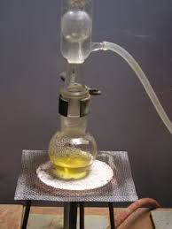

Non c'è niente da fare: ogni tanto il nostro "cuoco" si mette a fare una sana Fischer e poi ci propina l'estere con la scusa di farcene sentire l'olezzo... vabbè, andiamo allora a gustarci questo ennesimo sfizioso piattino: l'acetato di mentile!

Mi sono basato su una procedura eseguita da un bravo sperimentatore sporcaprovette anche lui e siccome questo estere aveva tre buone caratteristiche:
1)- è facile da fare
2)- mi mancava
3)- avevo giusto un po' di mentolo a disposizione
ne ho volentieri sacrificato qualche grammo per sentire la differenza olfattiva tra il mentolo ed il suo derivato acetico.
Materiale occorrente:
- mentolo
- acido acetico
- acido solforico
- bicarbonato di sodio
- cloruro di calcio
- vetreria opportuna
In un palloncino da 100 ml sciogliere 4 g di mentolo in 4,5 ml di acido acetico glaciale, aggiungendo sotto agitazione 0,5 ml di H2SO4 al 25%.
Contrariamente al solito si è usato l'acido diluito per evitare reazioni secondarie che porterebbero a minor resa ed a prodotti indesiderati.

Sistemare un refrigerante allhin e portare a lento riflusso per un paio di ore.
Alla fine, versare la miscela, di colore giallognolo, in un imbuto separatore ed eliminare subito la parte acida sottostante in eccesso; lavare poi più volte con qualche ml di soluzione satura di NaHCO3 fino a neutralizzazione completa e poi con acqua.
L'operazione è facilitata perchè l'estere ha densità 0,92 e quindi galleggia sulle acque di lavaggio ed è facilmente separabile.
Porre l'estere in una beutina da 25 ml ed essicare con qualche grammo di CaCl2 (o altro disidratante).
La resa non è stata eccezionale (62%) ma occorre considerare che lavorando su piccole quantità (qualche ml) è facile perdere per strada un po' di prodotto (lavaggi, travasi, essicazione, ecc.).
Per questo motivo è anche del tutto improponibile la purificazione del prodotto per distillazione, che oltretutto andrebbe eseguita a pressione ridotta a causa dell'alto punto di ebollizione (227°) dell'estere.
L'acetato di mentile si presenta come un olio limpido giallino chiaro.
Avendo a disposizione in giardino anche una bella pianticella di menta (che fondamentalmente contiene anche acetato di mentile), ho immediatamente confrontato l'odore della stessa con il mio prodotto, sfregando su una mano un paio di foglie, e mettendo sull'altra una goccia di estere: devo dire che gli odori si assomigliano molto.
Le foglie ovviamente hanno un aroma più "completo" e naturale (e ci mancherebbe, con tutto quello che contengono...) ma è molto buono anche il loro componente prodotto giocando con le molecole.
Al prossimo estere!